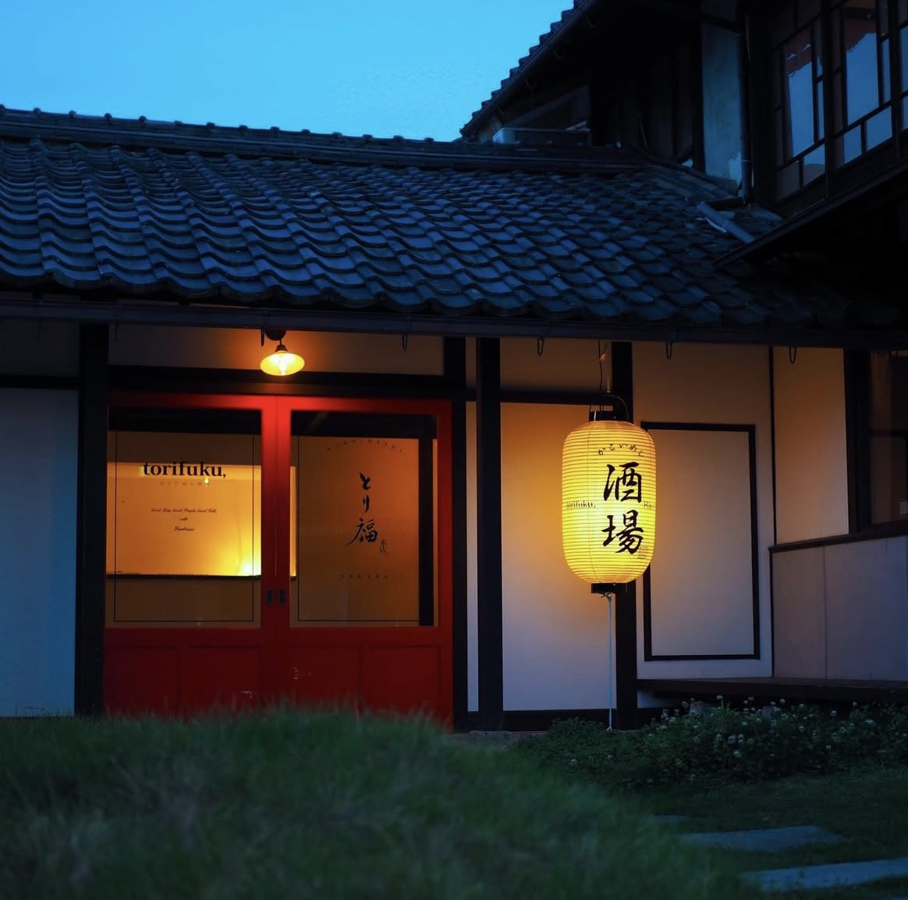
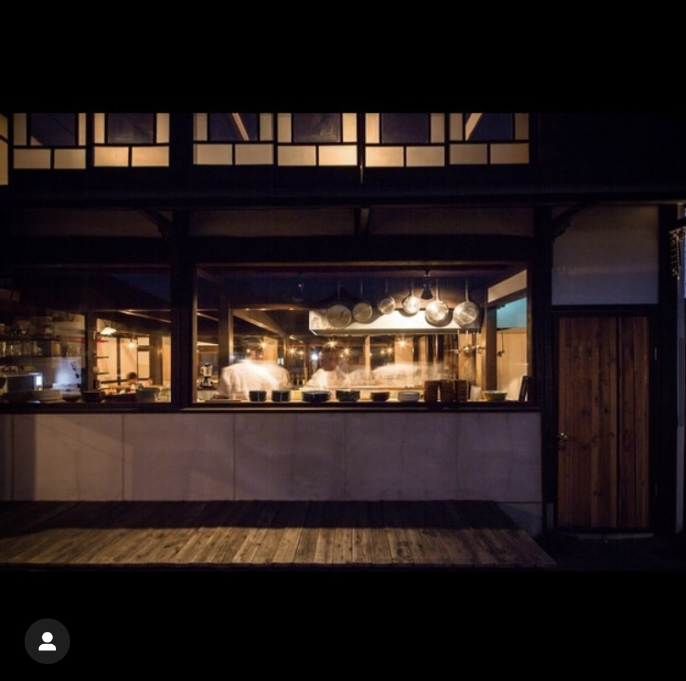

囲炉裏を囲み、
時を味わう。
SCROLL
こだわり
Concept
築百年の古民家で
炭火の香りに包まれる
滋賀県東近江市、八日市。
築100年を超える古民家を改装した「とり福」は、
どこか懐かしく、温かい空気が流れています。
主役は、各テーブルに備えられた「囲炉裏」。
厳選された新鮮な鶏肉や、地元の野菜を
お客様自身の手で、炭火でじっくりと炙っていただく。
パチパチと爆ぜる炭の音、立ち上る香ばしい煙。
五感で味わう、贅沢なひとときをお届けします。

空間
Space

高い天井と太い梁が印象的な店内。
ゆったりとくつろげる掘りごたつ席や、
お一人様でも気軽に楽しめるカウンター席をご用意。
デート、ご家族での団欒、大切なご宴会まで、
様々なシーンでご利用いただけます。
店舗情報
Access
- 店名
- かこいめし とり福
- 住所
- 〒527-0025 滋賀県東近江市八日市東本町5-36
- 営業時間
-
ランチ: 11:30 - 14:00 (L.O. 13:30)
ディナー: 17:00 - 24:00 (L.O. 23:00) - 定休日
- 木曜日
- アクセス
- 近江鉄道「八日市駅」より徒歩約12分